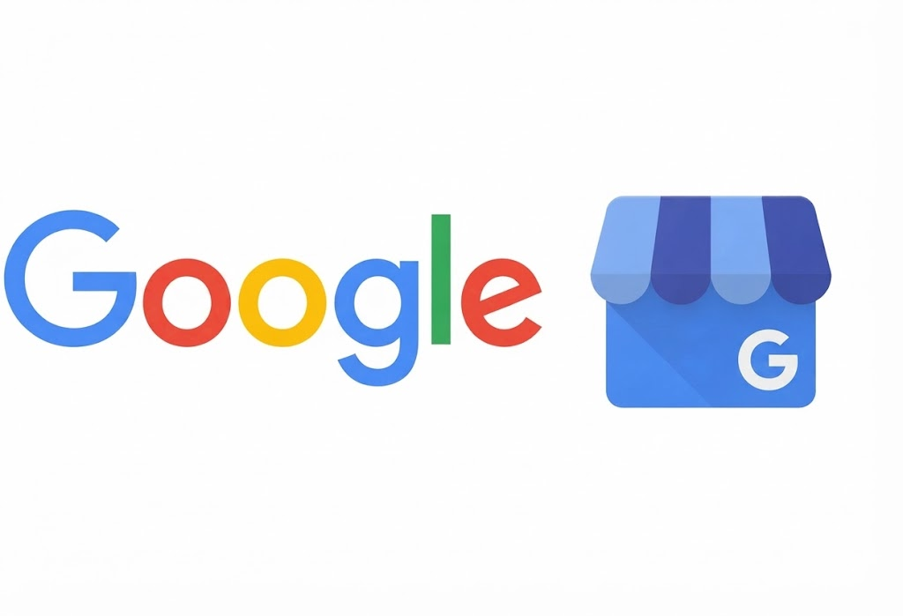

Локальное SEO для кабинета одного специалиста: что действительно работает.
У вас есть кресло, календарь записей и, может быть, два часа в неделю на маркетинг. Большинство советов по локальному SEO написаны для компаний с отделом маркетинга. Это версия для вас, в том порядке, в котором я делала бы это сама.
Алена Порох · imarket2web
Сначала неудобная часть
Для кабинета, который работает на один город, карты стоят больше, чем все остальное на этой странице вместе взятое. Эти три результата стоят выше обычных ссылок, у них есть звезды рейтинга и расстояние до вас, а на телефоне они занимают почти весь первый экран.
Поэтому честный порядок работы такой: сначала исправьте то, что определяет позицию на картах, и только потом думайте о сайте. Это противоположно тому, как продает большинство агентств, ведь сайт - это счет побольше, чем профиль.
Если у вас два часа в неделю, первые шесть недель целиком потратьте на Гугл Бизнес Профиль (Google Мой Бизнес) и отзывы. Ничто другое, что вы успеете за это время, даже близко не сравнится.
1. Профиль, заполненный один раз, но как следует
Большинство профилей заполнены на 60% и остаются такими годами. Полнота здесь не метрика для самолюбия: Google по ней решает, знает ли он о вас достаточно, чтобы уверенно вас рекомендовать.

- Название: настоящее название компании. Не «Название студии - Перманентный макияж Познань лучшие цены». Набивать название ключевыми словами запрещено правилами, и конкуренты могут на это пожаловаться - и жалуются.
- Часы работы, включая исключения. Профиль, в котором написано «открыто», когда закрыто, приносит отзывы на одну звезду от людей, которые ехали через полгорода.
- Услуги - каждая отдельно и с ценой. Каждая из них - это то, что люди ищут.
- Атрибуты: доступность, парковка, языки обслуживания, прием по записи. По ним работают реальные фильтры, которыми пользуются люди.
- Ссылка на запись, которая ведет туда, где вы действительно принимаете записи.
Это полдня работы, один раз. И самые окупаемые полдня в локальном маркетинге. Если хотите поручить это мне, настройка Гугл Бизнес Профиля - отдельная услуга.
2. Категории: поле с самым сильным рычагом
Основная категория больше, чем что-либо еще в профиле, определяет, по каким запросам вас показывают. Ошибетесь - и вся остальная работа пойдет в гору.
Основной категорией должно быть то, по чему вас больше всего хотят находить, а не самое широкое описание вас. Студия, которая делает перманентный макияж и ногти, выбирает основным одно из двух - то, что лучше оплачивается, - а не «Салон красоты», который бросает вас в один котел со всеми салонами города.
Дополнительные категории покрывают остальное. Добавьте те, что действительно подходят, и остановитесь: лишние категории размывают профиль, а не усиливают его.
Откройте профиль конкурента, посмотрите исходный код страницы и поищите строки с категориями. Это муторно, но показывает точно, какую категорию используют те, кто стоит выше вас, а это лучше любой догадки.
3. Отзывы: момент важнее формулировки
Каждое руководство говорит: просите отзывы. Почти ни одно не говорит когда - а именно это «когда» решает, получите вы отзыв или нет.
Просите в тот момент, когда клиент больше всего доволен результатом, и для большинства процедур это не тот момент, когда он выходит за дверь. Для перманентного макияжа - через неделю заживления, когда цвет улегся и прозвучал первый комплимент. Для массажа - в тот же вечер. Для тату - когда оно зажило и его кому-то показали.
Просите через тот канал, где вы уже общаетесь. Если запись идет через Booksy или WhatsApp, просите там, а не по почте, которую вам дали один раз.
- Отвечайте на каждый отзыв, в том числе на хорошие. Ответы видит каждый, кто сейчас решает, записываться или нет.
- На плохие отвечайте спокойно, публично и один раз. Потом переведите разговор в личный канал. Ответ пишется не для автора отзыва, а для следующего, кто его прочитает.
- Никогда не покупайте отзывы. Внезапный всплеск пятизвездочных отзывов с аккаунтов без истории - это шаблон, который Google распознает лучше всего, а санкции ударят по профилю, от которого вы зависите.
Ровный ручеек лучше всплеска. Десять отзывов за десять месяцев - более сильный сигнал, чем десять за неделю, и для человека, который их читает, это выглядит честнее.
4. Страницы: по одной на каждую услугу, которую ищут
Вот где сайт отрабатывает свое место. Ошибка, которую делает почти каждый кабинет, - один прайс со всеми процедурами. Такая страница может ранжироваться только по чему-то одному и ни на один конкретный вопрос хорошо не отвечает.
Человек, который ищет перманент губ, и человек, который ищет удаление после чужой неудачной работы, - это разные клиенты. У них разные страхи, разные бюджеты и разная срочность. Одна страница не обслужит обоих.
Дайте каждой процедуре свою страницу и напишите ее так, как люди действительно спрашивают:
- Что это такое - их словами, а не профессиональным термином
- Больно ли это и что вы с этим делаете
- Сколько держится и как выглядит неделя заживления
- Сколько стоит - диапазон цен нормально, молчание нет
- Что будет, если не понравится
Последние три - это вопросы, которые приходят вам в личные сообщения. Ответ на странице делает две вещи: ранжируется по длинному хвосту запросов и снимает сомнение, которое мешало записаться.
5. Фото, которые никто не обновляет
Профили со свежими фото получают больше вовлеченности, а вовлеченность возвращается видимостью. Но полезная версия этого совета уже, чем «выкладывайте больше фото».
- Вход - с той стороны, откуда к вам подходят. Именно это фото останавливает того, кто проходит мимо вашей двери.
- Помещение. Для первой процедуры ощущение от пространства - большая часть решения.
- Зажившие результаты, а не свежие. Свежая работа лучше выглядит на фото, но потом разочаровывает.
- Вы сами. Преимущество кабинета одного специалиста в том, что каждый раз клиента принимаете вы. Сеть такого не пообещает.
Что съедает полдня впустую
Это не менее важно, и об этом редко говорят вслух:
- Массовая регистрация в каталогах. Платить за размещение в двухстах каталогах имело смысл десять лет назад. Сейчас достаточно нескольких настоящих местных, остальное - шум.
- Ежедневная проверка позиций. Локальная выдача зависит от точного местоположения того, кто ищет. То, что вы видите, стоя в своем кабинете, - не то, что видит клиент за два района от вас.
- Публикации ради публикаций. Пост в Гугл Бизнес Профиле, который не поддерживает ничего из того, что вы продаете, стоит двадцать минут и не приносит ничего.
- Очередная переделка главной страницы. Если ваши клиенты принимают решение на картах, узкое место не главная страница.
- Покупка ссылок. Для местного кабинета они редко двигают локальные позиции, а иногда и правда вредят. Заработать несколько действительно подходящих - это совсем другая работа, и более медленная.
Порядок, если у вас всего два часа в неделю
Ничего из этого не работает быстро. Все это накапливается - и в этом весь смысл: профиль, который вы заполните в этом месяце, продолжает работать, пока вы занимаетесь страницами, а отзывы продолжают приходить, даже когда вы ничего не делаете.
Смена категорий может сдвинуть дело за несколько недель. Отзывы и страницы занимают месяцы. Если вам гарантируют место на картах к конкретной дате, спросите, что будет, если не успеют.
Я делаю это для таких кабинетов, как ваш.
Расскажите, что вы продаете и где вас должны находить, и я скажу, какой из пяти шагов выше на самом деле стоит вам записей. Если сайт уже есть, начинаю с бесплатного SEO-аудита.